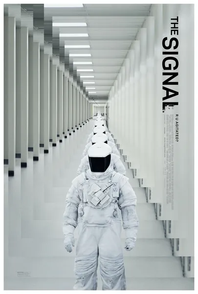

Фильм · 2014 · Триллер, Фантастика
Трое студентов MIT отправляются в путешествие через всю страну, чтобы найти хакера-тролля по прозвищу NOMAD, который унижает их в сети. След приводит их в заброшенный дом посреди пустыни, где происходит нечто необъяснимое, — а затем один из них приходит в себя в костюме биологической защиты в окружении людей в аналогичном снаряжении. По мере развития сюжета становится всё очевиднее, что «хакинг» здесь — это не сетевой термин, а экзистенциальная категория. Стильный научно-фантастический нуар о наблюдателях, симуляции и цене любопытства.
Three MIT students drive across the country to hunt down a hacker troll named NOMAD who humiliates them online. The trail leads to an abandoned house in the desert, where something inexplicable happens — and then one of them wakes up in a biohazard suit among people in protective gear. The further it goes, the clearer it becomes that 'hacking' here is an existential category, not a network one. A stylish sci-fi noir about watchers, simulation and the price of curiosity.
← Вернуться в каталог IT Movies